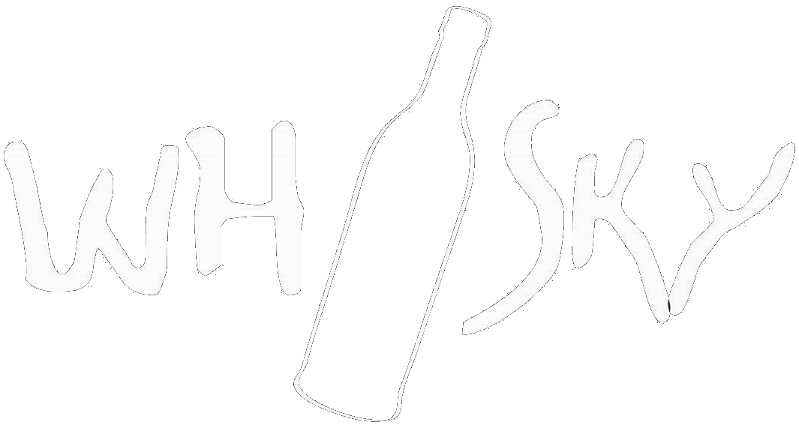

We are four piece band from Birmingham, UK. Going back to beginning of the band, Whisky started as a tribute to legendary Polish blues band Dzem. We still love playing Dzem's songs, but we have now expanded to play classic blues and rock songs.
Get in touch